-
2 режима
работы -
Расширенная
комплектация -
Вертикальное и горизонтальное отпаривание
-
 5 лет
5 лет
гарантии
Пароочиститель
BDR-1800
- Быстрый нагрев
- Долив воды в процессе работы
- Индикатор низкого уровня воды
- Автоотключение без воды
- Сенсорное управление
- 2 режима работы
Убивает до 99,9% микробов, бактерий, грибков и пылевых клещей!*
* Приведённые цифры являются усреднёнными значениями, полученными благодаря лабораторным испытаниям методов паровой очистки.
Справляется с самыми разными задачами:
Окна и оконные рамы
В комплекте насадка с водосгоном, идеальный результат без разводов.
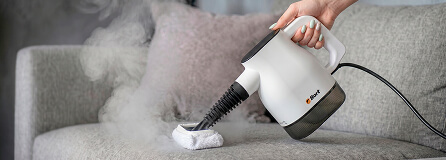
Текстиль: одежда, мебель, игрушки
С помощью пара можно обеззаразить, избавить от пыли и аллергенов.
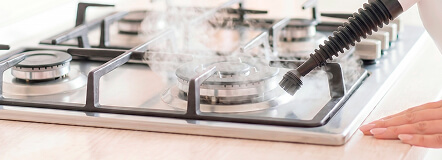
Кухонные гарнитуры и техника
Пар избавит от застарелого жира и нагара в духовках и микроволновках без использования агрессивной химии.
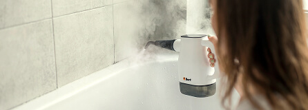
Труднодоступные места
Эффективно очистит самые отдалённые уголки в помещениях, например, швы между плитками, плинтуса и батареи.
Готовность к работе 20 секунд
Короткое время нагрева (20 секунд) позволяет приступить к очистке или отпариванию практически сразу после включения.
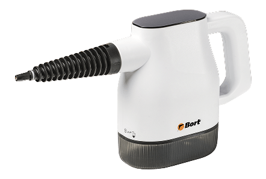
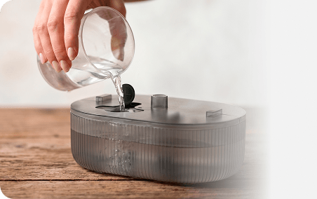
Можно доливать воду во время работы
Благодаря съёмному резервуару и насосной подаче воду можно добавлять в контейнер прямо во время уборки — не отключая прибор от сети и не ожидая остывания пароочистителя.
Резервуар для воды 400 мл
Резервуар объёмом 400 мл обеспечивает комфортную работу, не перегружая руку лишним весом. Полного бака хватает примерно на 11–16 минут в зависимости от выбранного режима подачи пара.
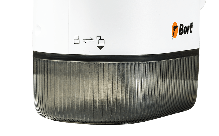
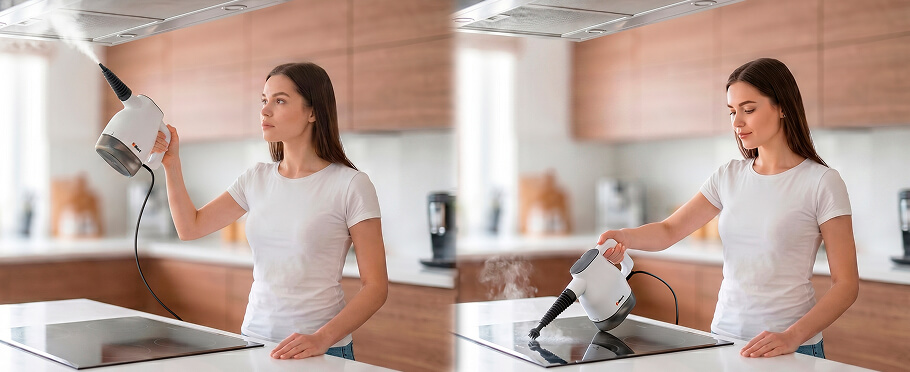
Вертикальное и горизонтальное отпаривание
Пароочиститель работает в любом положении без потери мощности пара. Это позволяет свободно работать как горизонтально — с вещами, разложенными на доске или столе, или очищая плиту и столешницу, так и вертикально — обрабатывая шторы, обивку мебели на весу или вытяжку над головой.
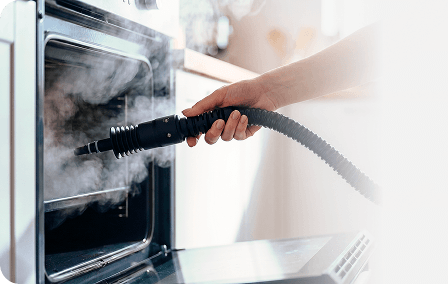
Гибкий шланг
Шланг делает пароочиститель функциональным в труднодоступных местах. Его легко отсоединить, благодаря чему пароочиститель удобно хранить даже в ограниченном пространстве.
2 режима работы, температура пара 135°C
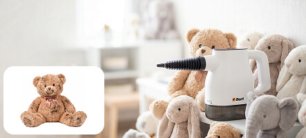
(Экономичный/Деликатный)
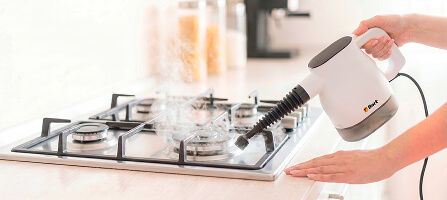
(Интенсивный)
Преимущества пароочистителя BORT BDR-1800
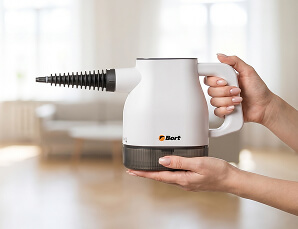
Эргономика.
Вес 1,05 кг
Малый вес устройства снижает нагрузку на кисть при длительной работе.
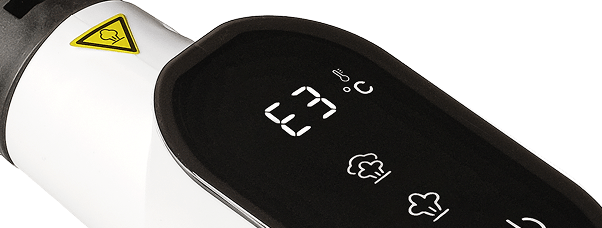
Индикатор низкого уровня воды
Когда вода в баке достигает критической отметки, на дисплее загорается индикатор пустого бака E3.
Автоотключение
без воды
Функция автоматического выключения срабатывает при отсутствии воды в резервуаре
Сенсорное управление
-
Вкл/Выкл — запуск устройства и начало нагрева. После нажатия прибор входит в рабочий режим за 20 секунд.Значение 100 на дисплее означает, что прибор готов к работе и подаче пара. Вы можете приступить к выбору режима.
- Разблокировка — открывает доступ к выбору режима. Удерживайте кнопку 2 секунды для включения, затем выберите режим 1 или 2. Пар не подаётся до выбора режима — это защита от случайного запуска. Если режим не выбран за 5 секунд, прибор блокируется.
- Режим 1 (25 г/мин) — деликатный/экономичный. Для чувствительных поверхностей, тонких тканей и повседневной уборки.
- Режим 2 (36 г/мин) — интенсивный. Для сложных загрязнений: застарелый жир, известковый налёт, межплиточные швы.
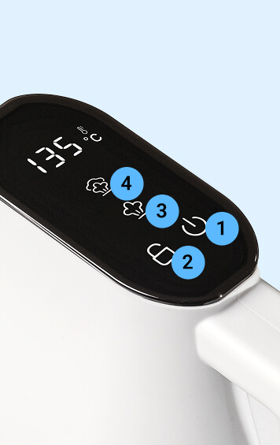
Богатая комплектация для различных задач
Водосгон

Насадка-адаптер
для окон и стекол
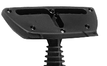
Махровая салфетка
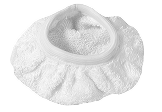
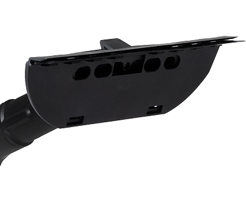
Насадка для мытья окон, стекол и настенной плитки
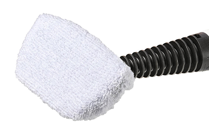
Насадка для мытья дверей, фасадов кухни и зеркал
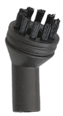
Круглая щетка-насадка
с полимерной щетиной
для очистки сантехники
и швов между плитками
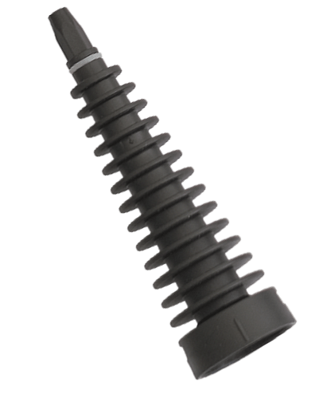
Насадка-адаптер
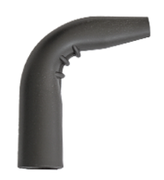
Угловая насадка
для очистки углов
и труднодоступных мест
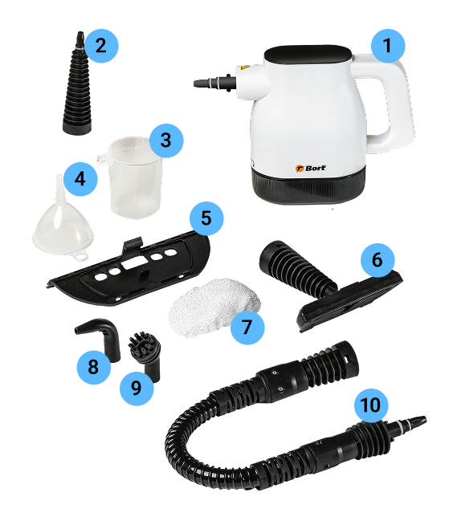
- Пароочиститель BORT BDR-1800
- Точечное сопло
- Мерный стакан
- Воронка
- Водосгон
- Насадка-адаптер для окон и стекол
- Махровая салфетка
- Угловая насадка
- Малая круглая щётка-насадка с полимерной щетиной
- Удлинительный шланг
Пароочиститель Bort BDR-1800 — это современное и компактное решение для уборки и дезинфекции без бытовой химии. Модель создана для тех, кто ценит непрерывную работу и не хочет тратить время на ожидание остывания прибора. Благодаря возможности долива воды прямо в процессе работы и весу всего 1,05 кг, уборка становится лёгкой и не требует длительных перерывов.
Прибор готов к работе за 20 секунд. Нагрев происходит практически мгновенно, позволяя приступить к очистке сразу после включения. Возможность долива воды реализована через быстросъёмный резервуар: насос подаёт воду без необходимости стравливать давление и ждать остывания, в отличие от моделей с классическим предохранительным клапаном. Сенсорный дисплей отображает температуру пара и текущий режим, а при низком уровне воды подаёт сигнал E3. Бак объёмом 400 мл обеспечивает до 16 минут непрерывной работы.
Сочетание мощности 1400 Вт и давления 3,2 бар гарантирует эффективную очистку. ТЭН генерирует стабильный «сухой» пар без брызг, а направленная струя выбивает загрязнения из труднодоступных мест: оконных рам, радиаторов и межплиточных швов. Температура пара 135°C нейтрализует большинство бактерий и вирусов. Два режима работы адаптируют прибор под задачу: деликатный (25 г/мин) подходит для регулярной уборки и чувствительных покрытий, а интенсивный (36 г/мин) — для растворения застарелого жира и налёта.
Продуманная эргономика и безопасность делают использование комфортным. Малый вес снижает нагрузку на руку при работе на весу. Комплексная система защиты включает датчики уровня воды, автоотключение при перегреве и длительном простое. Плоская сенсорная панель гигиенична и легко очищается салфеткой.
Богатая комплектация делает прибор универсальным. В набор входят: насадка для окон со скребком, гибкий шланг с форсункой, точечное сопло для щелей, полимерная щётка для кафеля, угловая насадка и салфетка из махровой ткани для деликатной уборки и отпаривания одежды.
Bort BDR-1800 — это удобный инструмент для качественной уборки всего дома. Пароочиститель рассчитан на бытовое применение и сочетает компактность с эффективностью профессиональной дезинфекции. Выбирайте непрерывную работу без компромиссов с Bort BDR-1800!